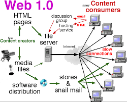

This website explains basic Internet and Web concepts using a simple Web 1.0 style. Web 1.0 websites are static and mainly used to display information. They do not include interactive features like modern websites. This project covers important topics such as HTML, HTTP, FTP, DNS, and URL in a clear and simple way for learning purposes.

>There were no comment sections, social media features, or dynamic content, meaning users could only view information and not actively participate. This made Web 1.0 simple, fast, and easy to load, but limited in terms of user engagement and functionality compared to modern web technologies.